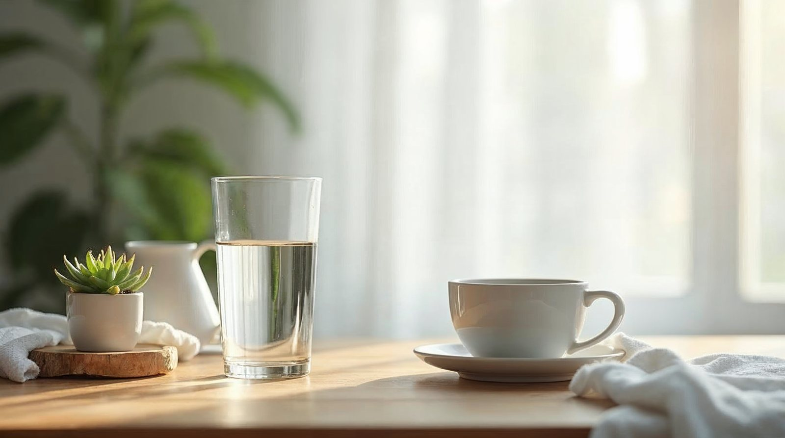
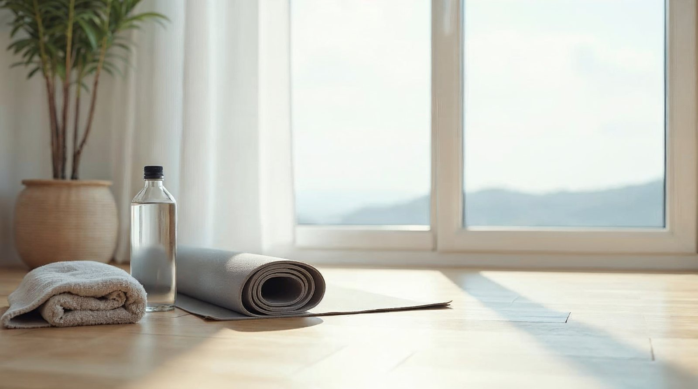
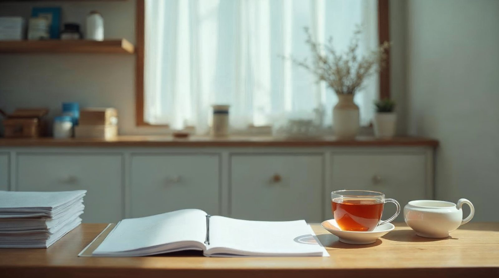
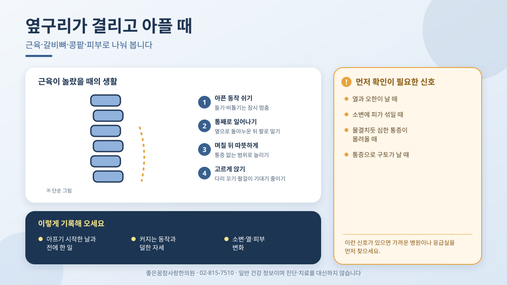

이종호 한의사 감수좋은꿈참사랑한의원 대표원장 (한의사 면허번호 19769)발행 2026-11-26 · 수정 2026-11-27
이 글의 차례
아침에 침대에서 몸을 돌려 일어나는데 옆구리가 '찌릿' 하고 결려요. 숨을 크게 들이쉬면 걸리고, 기침이라도 하면 옆구리를 움켜쥐게 되죠. 어제 특별히 무리한 기억도 없는데, 하루 종일 몸을 비스듬히 기울인 채 조심조심 움직이게 됩니다.
진료실에서는 이 불편을 흔히 "담 걸렸어요"라는 말로 들고 오세요. 원래 그래요. 실제로 근육이 놀라 굳은 경우가 제일 많거든요. 그러니 너무 겁부터 내실 일은 아니에요.
그런데 옆구리는 갈비뼈와 등뼈, 콩팥과 장, 피부 신경이 한데 지나가는 자리예요. 그래서 저는 둘을 나눠서 봐요. '옆구리 근육이 아픈 것'과 '옆구리 안쪽에서 신호가 오는 것'은 다른 얘기거든요. 결린다는 같은 말 안에 이 두 갈래가 섞여 있는 거예요.
왜 이걸 먼저 나누는 줄 아세요? 그 구분이 서야 쉬어야 할지, 살살 움직여야 할지도 정할 수 있기 때문이에요. 그래서 저는 옆구리가 아프다는 말씀을 들으면 손으로 짚어 보고, 몸을 돌려 보고, 소변과 피부 얘기까지 여쭤요.
이 글에서는 옆구리 통증을 어떤 갈래로 나눠 보는지, 스스로 어떤 점을 확인해 볼 수 있는지, 일상에서 무엇을 조심하면 좋은지, 그리고 한의원에서 함께 살필 수 있는 부분을 차근차근 정리해 볼게요.
옆구리는 어떤 자리인가요
옆구리는 갈비뼈 아래쪽 끝에서 골반 위까지, 몸통 옆면을 넓게 부르는 말입니다. 겉에는 몸을 비틀고 숙이게 하는 배 옆 근육과 등 근육이 겹겹이 있고, 그 사이로 갈비뼈 사이 신경이 지나갑니다.
안쪽으로 들어가면 등 쪽 깊은 곳에 콩팥이 있고, 오른쪽 위에는 간과 쓸개, 왼쪽 위에는 비장과 장의 굽이가 있습니다. 그래서 옆구리 통증은 겉의 근육에서도, 안쪽의 장기에서도 올 수 있습니다.
다행히 대부분은 근육과 관절에서 옵니다. 다만 안쪽에서 오는 통증은 생활 관리만으로 다룰 일이 아니어서, 그 신호를 먼저 가려내는 것이 중요합니다.
왜 옆구리가 결릴까요
가장 흔한 이유는 근육이 갑자기 놀라는 경우입니다. 몸을 비틀며 물건을 들거나, 높은 곳에 팔을 뻗거나, 재채기를 세게 하는 순간 옆구리 근육이 짧게 늘어났다가 굳어 버립니다. 이때는 움직임에 따라 통증이 뚜렷하게 달라집니다.
오래 한쪽으로 기울어 앉는 습관도 원인이 됩니다. 소파 팔걸이에 기대 휴대폰을 보거나, 한쪽 다리를 꼬고 앉아 일하면 한쪽 옆구리는 짧게 눌리고 반대쪽은 늘어난 채로 오래 버팁니다. 이런 날이 쌓이면 아침에 일어날 때 결림이 먼저 찾아옵니다.
등뼈와 갈비뼈가 만나는 관절이 굳어도 옆구리로 통증이 번집니다. 등 위쪽이 뻣뻣한 분이 숨을 깊게 들이쉴 때 옆구리까지 당긴다고 하시는 경우가 많습니다. 기침을 오래 한 뒤 갈비뼈 사이 근육이 지쳐 결리는 경우도 흔합니다.
안쪽 원인으로는 콩팥이나 요관의 돌, 콩팥의 염증, 쓸개의 돌이나 염증, 장의 가스와 변비 등이 있습니다. 피부 신경을 따라 오는 대상포진도 물집이 보이기 전에 옆구리 통증으로 먼저 시작할 수 있습니다.
갈래별로 이렇게 나눠 봅니다
근육이 놀란 경우
특정 동작 뒤에 시작되고, 몸을 돌리거나 숙일 때, 기침할 때 통증이 커집니다. 손으로 눌러 아픈 자리가 있고, 가만히 쉬면 덜합니다. 며칠에 걸쳐 조금씩 가라앉는 모양이 많습니다.
등과 갈비뼈 관절에서 오는 경우
등 한가운데나 날개뼈 아래가 함께 뻐근하고, 숨을 깊게 들이쉬면 옆구리까지 띠처럼 당깁니다. 오래 앉아 일한 날 오후에 심해지고, 등을 펴거나 기지개를 켜면 잠시 풀립니다.
콩팥과 요로에서 오는 경우
등 아래쪽 옆구리 깊은 곳이 아프고, 자세를 바꿔도 통증이 줄지 않는 편입니다. 물결치듯 몰려오는 심한 통증, 소변 색 변화, 소변 볼 때 따가움, 열이나 오한이 함께 오기도 합니다. 이 갈래는 비뇨의학과나 내과 진료가 먼저입니다.
피부 신경에서 오는 경우
한쪽 옆구리를 따라 띠 모양으로 피부가 따갑고 화끈거리며, 옷이 스치기만 해도 쓰라립니다. 며칠 뒤 같은 자리에 붉은 물집이 올라오면 대상포진을 떠올립니다. 피부과나 내과에서 일찍 약을 시작하는 것이 중요합니다.
소화기에서 오는 경우
오른쪽 갈비뼈 아래가 기름진 식사 뒤에 묵직하게 아프거나, 왼쪽 옆구리가 가스와 변비가 있을 때 더부룩하게 당기는 경우입니다. 식사와 배변 흐름에 따라 통증이 바뀌는지가 단서가 됩니다.
스스로 점검해 보세요
- 아프기 시작하기 전에 특별한 동작이나 무리가 있었나요?
- 손으로 누르면 아픈 자리가 있나요?
- 몸을 돌리거나 숙일 때 통증이 달라지나요?
- 소변 색이 붉거나 탁하고, 볼 때 따가운가요?
- 열이나 오한이 함께 있나요?
- 피부가 따갑거나 붉은 물집이 보이나요?
- 식사나 배변에 따라 통증이 바뀌나요?
움직임에 따라 통증이 뚜렷하게 바뀌고 눌러 아픈 자리가 있다면 근육과 관절 쪽에 가깝습니다. 자세와 상관없이 깊게 아프고 소변이나 열의 변화가 함께 있다면 안쪽 원인을 먼저 확인하는 것이 순서입니다.

먼저 이렇게 여쭙니다
- 언제부터, 어떤 계기로 아프기 시작했나요?
- 아픈 자리는 어디이고, 한쪽인가요 양쪽인가요?
- 찌르는지, 결리는지, 묵직한지, 화끈한지 어떤 느낌인가요?
- 숨, 기침, 몸 돌리기에 따라 어떻게 달라지나요?
- 소변, 열, 피부, 식사와 관련된 변화가 있나요?
- 하시는 일과 평소 앉는 자세는 어떠신가요?
- 드시는 약이나 최근 받은 치료가 있나요?
일상에서 먼저 해 볼 수 있는 것
근육이 놀란 첫 하루 이틀은 아픈 동작을 반복하지 않는 것이 먼저입니다. 무거운 물건 들기, 몸을 크게 비트는 동작은 잠시 쉬어 주세요. 그렇다고 하루 종일 누워 있기보다는 통증이 크지 않은 범위에서 천천히 걷는 편이 회복에 도움이 됩니다.
침대에서 일어날 때는 바로 몸을 비틀어 일어나지 말고, 먼저 옆으로 돌아누운 뒤 팔로 바닥을 밀며 몸통을 통째로 일으켜 보세요. 옆구리 근육이 한꺼번에 당겨지는 것을 줄일 수 있습니다. 기침이나 재채기가 나올 때는 쿠션을 옆구리에 대고 살짝 눌러 주면 덜 울립니다.
며칠 지나 날카로운 통증이 가라앉으면 따뜻한 수건으로 옆구리와 등을 감싸 근육을 풀어 줍니다. 서서 한 팔을 머리 위로 올리고 반대쪽으로 천천히 기울여 옆구리를 늘리는 동작을 통증이 없는 범위에서 해 보세요. 숨을 참지 말고 내쉬면서 늘리는 것이 요령입니다.
앉는 자세도 다시 봅니다. 한쪽 팔걸이에 기대거나 다리를 꼬고 앉는 습관이 있다면 양쪽 엉덩이에 체중을 고르게 싣고, 모니터와 키보드를 몸 정면에 둡니다. 가방은 양쪽 어깨에 메거나 좌우를 번갈아 드는 것이 좋습니다. 장시간 운전하신다면 한두 시간마다 차에서 내려 허리를 펴고 옆구리를 늘려 주세요.
물은 하루 동안 나눠 충분히 드시길 권합니다. 소변 색이 진한 날이 많다면 물이 모자란 신호일 수 있습니다. 다만 콩팥이나 심장 질환으로 물을 조절하라는 안내를 받으셨다면 그 안내를 따라 주세요.
겨울과 대청소 철에 잦아지는 이유
추운 날에는 몸이 움츠러들어 근육이 굳은 채로 하루를 보내게 됩니다. 이 상태에서 갑자기 창문을 닦거나 높은 수납장을 정리하거나 눈을 치우면, 준비되지 않은 옆구리 근육이 놀라기 쉽습니다. 연말 대청소나 김장 뒤에 옆구리 결림으로 오시는 분이 많은 이유입니다.
큰일을 앞두고는 오 분 정도 팔 돌리기와 옆구리 늘리기로 몸을 데워 주세요. 높은 곳은 받침대를 써서 팔을 무리하게 뻗지 않도록 하고, 한 시간에 한 번은 허리를 펴고 쉬어 갑니다. 무거운 물건은 몸에 바짝 붙여 들고, 들어 올린 채로 몸을 비틀지 말고 발을 옮겨 방향을 바꿉니다. 일을 마친 저녁에는 따뜻한 물로 샤워해 굳은 근육을 풀어 줍니다.
오른쪽과 왼쪽은 조금 다르게 봅니다
오른쪽 옆구리 위쪽이 기름진 식사 뒤에 묵직하게 아프고 어깨 뒤쪽까지 번진다면 쓸개 쪽을 떠올립니다. 이 경우는 내과에서 초음파 등으로 먼저 확인받으시길 권합니다.
왼쪽 옆구리는 장의 굽이에 가스가 머물거나 변비가 있을 때 더부룩하게 당기는 경우가 많습니다. 배변 뒤나 가스가 빠진 뒤 편해진다면 장의 흐름을 함께 살핍니다. 어느 쪽이든 아픈 쪽과 시각, 식사와의 관계를 적어 오시면 갈래를 나누는 데 큰 도움이 됩니다.
잠자는 자세도 함께 봅니다
옆구리가 결린 밤에는 아픈 쪽을 아래로 두고 눕기가 어렵습니다. 아프지 않은 쪽으로 누워 무릎 사이에 베개를 끼우고, 아픈 쪽 팔은 앞에 둔 쿠션에 걸쳐 두면 옆구리가 덜 당깁니다. 바로 누울 때는 무릎 아래에 베개를 받쳐 허리와 옆구리의 긴장을 줄여 보세요.
너무 푹 꺼지는 매트리스나 높은 베개는 몸통을 한쪽으로 휘게 만들어 아침 결림을 키우기도 합니다. 자고 일어났을 때 더 아프고 낮에 움직이면서 풀린다면 잠자리 환경을 먼저 살펴보시길 권합니다.

운동하다 생긴 경우
골프나 배드민턴, 테니스처럼 몸을 한 방향으로 세게 비트는 운동 뒤에 옆구리가 결리는 분이 많습니다. 몸이 덜 풀린 상태에서 첫 스윙을 크게 하거나, 오랜만에 운동을 몰아서 한 날 특히 잘 생깁니다.
이럴 때는 며칠 운동을 쉬고, 다시 시작할 때는 스윙의 크기를 줄여 천천히 늘려 가세요. 운동 전 오 분 정도 걷고 몸통을 좌우로 가볍게 돌려 데워 주는 것만으로도 놀라는 일이 줄어듭니다. 같은 쪽이 자꾸 결린다면 자세의 버릇을 함께 살펴봅니다.
통증이 오래 이어질 때
근육이 놀란 결림은 대개 며칠에서 한두 주에 걸쳐 가라앉습니다. 그런데 몇 주가 지나도 비슷하게 남아 있거나, 좋아졌다 싶으면 다시 결리기를 반복한다면 한 가지 동작보다 생활 전체의 습관이 통증을 붙잡고 있을 가능성이 큽니다.
이때는 아픈 자리만 보지 않고 등과 골반, 숨 쉬는 모양까지 함께 봅니다. 등이 굳어 갈비뼈가 잘 움직이지 않으면 옆구리 근육이 그 몫까지 떠맡게 됩니다. 처음 아팠을 때와 지금의 통증 모양이 달라졌다면 그 변화도 꼭 말씀해 주세요.

한의원에서 함께 살필 수 있는 경우
안쪽 원인을 먼저 가려낸 뒤, 근육과 관절 쪽 통증이라면 한의원에서 함께 살필 수 있습니다. 진찰을 마친 뒤 그때의 상태에 맞춰 방법을 고르며, 모든 분께 같은 치료를 드리지는 않습니다.
- 몸을 비틀거나 물건을 든 뒤 옆구리가 결리고 숨 쉴 때 걸리는 경우
- 등 위쪽이 굳고 숨을 깊게 쉬면 옆구리까지 당기는 경우
- 오래 한쪽으로 기울어 앉는 습관으로 같은 쪽 옆구리가 자주 결리는 경우
- 대상포진 물집이 아문 뒤에도 그 자리가 화끈거리고 찌릿한 경우
근육과 관절 쪽은 침이나 약침으로 굳은 자리를 살피고, 등과 갈비뼈의 움직임이 막혀 있다면 필요에 따라 추나를 함께 고려합니다. 자세 습관을 진료실에서 같이 점검하고, 통증이 오래 이어지며 몸 전체가 지쳐 있다면 필요하다고 판단되면 한약을 고려합니다. 한약은 지금 드시는 약을 모두 확인한 뒤 신중하게 정합니다.
피를 묽게 하는 약을 드시거나 다른 병원에서 받는 치료가 있다면 처음에 꼭 알려 주세요. 처방받은 약은 임의로 멈추지 마시고 그대로 이어 가 주세요. 임신 중이시라면 먼저 알려 주시고 산부인과 선생님과도 상의해 주세요.
이렇게 기록해 오시면 상담이 쉬워집니다
옆구리 통증은 아침과 저녁이 다르고, 자세마다 또 달라요. 원래 그래요. 그래서 기억에만 기대면 막상 진료실에서 설명하기가 어렵거든요.
- 아프기 시작한 날과 그 전에 한 일
- 아픈 자리(그림에 표시해 오셔도 좋습니다)
- 통증이 커지는 동작과 덜한 자세
- 소변 색, 열, 피부 변화가 있었는지
- 식사와 배변에 따른 변화
통증의 세기를 0에서 10 사이 숫자로 아침과 저녁에 한 번씩 적어 두시면, 가벼워지는 흐름인지 그대로인지가 한눈에 보여요. 그 흐름을 보고 다음 진료의 방향을 함께 정합니다.
굳은 근육을 살피는 건 제가 할게요. 대신 하나만 부탁드려요. 무거운 물건을 든 채로 몸을 비트는 동작, 그것만 며칠 줄여 주세요. 딴 건 하시던 대로 편하게 움직이셔도 돼요. 옆구리는 아예 안 쓰는 게 아니라 살살 쓰는 게 좋은 경우가 많거든요.
궁금한 건 그냥 편하게 물어보세요. 아픈 자리를 같이 짚어 보면서 어느 갈래인지부터 차근차근 나눠 보겠습니다.
이런 증상은 먼저 확인이 필요합니다
- 옆구리 통증과 함께 열과 오한이 나거나 소변에 피가 섞이는 경우
- 자세와 상관없이 물결치듯 몰려오는 심한 통증으로 구토가 나는 경우
이런 신호가 있으면 한의원보다 가까운 병원이나 응급실을 먼저 찾으세요.
함께 읽으면 좋은 글
- 숨을 크게 쉬거나 몸을 돌릴 때 갈비뼈가 찌릿한 늑간신경통·늑연골염은 어떻게 살피나요?
- 옆구리와 등 뒤쪽이 아플 때 근육 문제인지 어떻게 구분해서 보나요?
- 몸 한쪽에 띠처럼 물집이 생기는 대상포진, 한의원은 언제 함께 살피나요?
- 어깨와 등이 늘 뭉쳐 있고 담이 자주 걸리는 근막통증증후군은 어떻게 살피나요?
- 대상포진 물집이 다 아문 뒤에도 그 자리가 화끈하고 찌릿한 신경통은 어떻게 살피나요?

여쭙는 것
- 언제부터, 어떤 계기로 아프기 시작했나요?
- 아픈 자리는 어디이고, 한쪽인가요 양쪽인가요?
- 찌르는지, 결리는지, 묵직한지, 화끈한지 어떤 느낌인가요?
생활에서 해 볼 것
- 근육이 놀란 첫 하루 이틀은 아픈 동작을 반복하지 않는 것이 먼저입니다.
- 무거운 물건 들기, 몸을 크게 비트는 동작은 잠시 쉬어 주세요.
- 그렇다고 하루 종일 누워 있기보다는 통증이 크지 않은 범위에서 천천히 걷는 편이 회…
한의원에서 함께 살필 것
- 몸을 비틀거나 물건을 든 뒤 옆구리가 결리고 숨 쉴 때 걸리는 경우
- 등 위쪽이 굳고 숨을 깊게 쉬면 옆구리까지 당기는 경우
- 오래 한쪽으로 기울어 앉는 습관으로 같은 쪽 옆구리가 자주 결리는 경우
먼저 확인이 필요한 신호
- 옆구리 통증과 함께 열과 오한이 나거나 소변에 피가 섞이는 경우
- 자세와 상관없이 물결치듯 몰려오는 심한 통증으로 구토가 나는 경우
한눈에 보는 표
| 구분 | 핵심 |
|---|---|
| 여쭙는 것 | 언제부터, 어떤 계기로 아프기 시작했나요? 아픈 자리는 어디이고, 한쪽인가요 양쪽인가요? |
| 한의원에서 함께 살필 것 | 몸을 비틀거나 물건을 든 뒤 옆구리가 결리고 숨 쉴 때 걸리는 경우 등 위쪽이 굳고 숨을 깊게 쉬면 옆구리까지 당기는 경우 |
| 먼저 확인이 필요한 신호 | 옆구리 통증과 함께 열과 오한이 나거나 소변에 피가 섞이는 경우 자세와 상관없이 물결치듯 몰려오는 심한 통증으로 구토가 나는 경우 |
자주 묻는 질문
담 걸렸다는 말은 무슨 뜻인가요?
흔히 근육이 갑자기 놀라 굳으면서 결리고 아픈 상태를 그렇게 부릅니다. 대개 움직임에 따라 통증이 달라지고 눌러 아픈 자리가 있습니다. 다만 소변이나 열의 변화가 함께 있다면 다른 원인부터 확인하셔야 합니다.
옆구리가 아프면 콩팥 문제인가요?
대부분은 근육과 관절에서 옵니다. 자세와 상관없이 깊게 아프고 소변 색 변화나 열이 함께 있을 때 콩팥과 요로 쪽을 먼저 확인합니다.
찜질은 따뜻하게 하나요, 차게 하나요?
다친 직후 붓고 화끈하다면 짧게 차게 대 주고, 하루 이틀 지나 근육이 굳어 있다면 따뜻하게 풀어 주는 쪽이 편합니다. 피부가 따갑고 물집이 보인다면 찜질보다 진료가 먼저입니다.
결릴 때 스트레칭을 해도 되나요?
날카로운 통증이 가라앉은 뒤, 통증이 없는 범위에서 천천히 늘려 주세요. 아픈데도 억지로 늘리면 근육이 더 놀랄 수 있습니다.
며칠이면 괜찮아지나요?
근육이 놀란 경우는 며칠에서 한두 주에 걸쳐 가라앉는 경우가 많지만 사람마다 다릅니다. 오래 이어지거나 자꾸 반복된다면 자세 습관과 등의 움직임을 함께 살펴보세요.
좋은꿈참사랑한의원은 재진 때 지난번 이야기부터 이어서 여쭙니다. 진료시간과 예약은 오시는 길에서 확인하세요.
어디서 상담받을 수 있나요?
좋은꿈참사랑한의원은 서울 동작구 만양로2길 2 신성빌딩 3층·5층(서울 동작구 상도동, 7호선 상도역 3번 출구 근처)에 있습니다. 한의사 3명(이종호 대표원장, 조영기 수석진료원장, 정원영 진료원장)이 진료합니다. 진료시간은 평일 09:30~20:00(점심 13:00~14:00), 토·일·공휴일 09:30~15:00이며, 방문 전 전화로 확인을 권합니다. 예약은 네이버 예약, 카카오톡 상담, 전화 02-815-7510로 받습니다.
이 글은 일반적인 건강 정보이며 개인의 진단이나 치료를 대신하지 않습니다. 증상이 있거나 복용 중인 약이 있다면 진료를 통해 확인하세요. 치료 효과는 개인마다 다를 수 있습니다.
작성 기준: 일반적으로 알려져 있는 건강 정보를 참고해 정리했습니다(대표원장 감수). 증상 기록은 1~2주 동안 하루 1회, 비슷한 시간에 적어 오시면 지난 상태와 비교하기 쉽습니다.